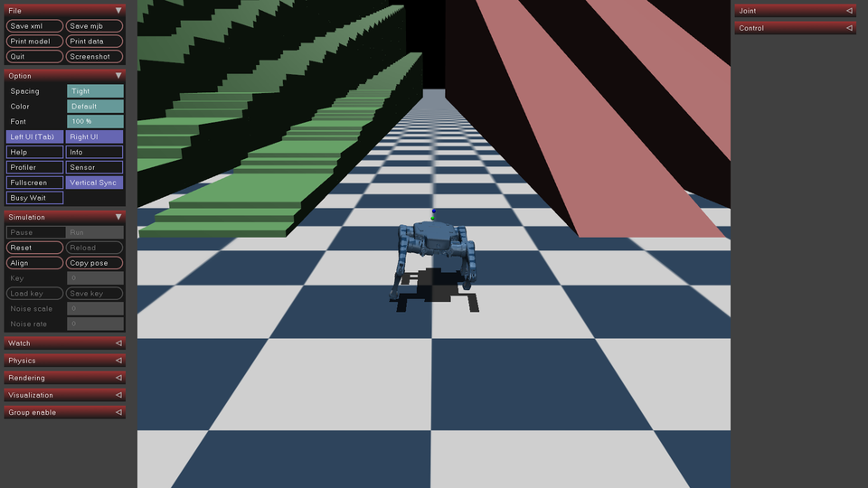
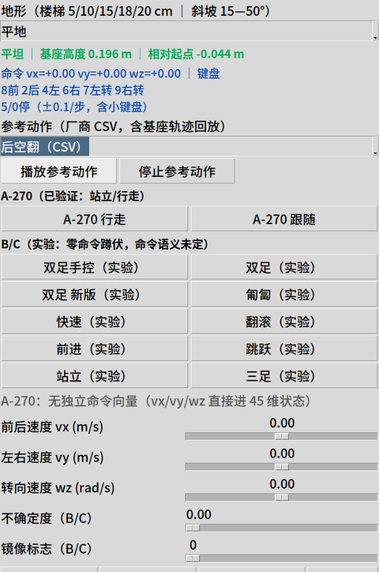
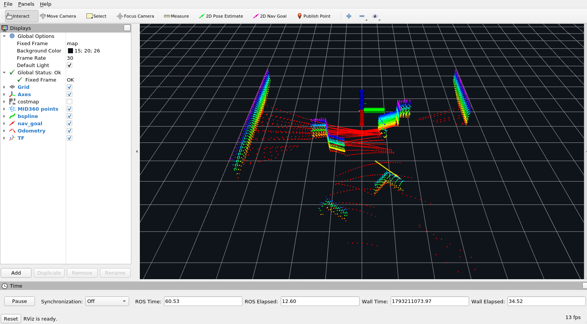
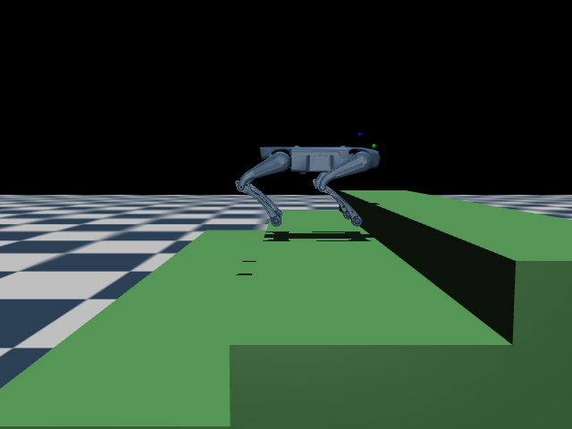

源码面 · ws/
驱动、SLAM、定位、感知、导航、任务、安全、编排、平台、仿真共十个功能层；v8.1 按平台契约/组合/装配组织自研代码，第三方原件另建适配层，改动留来源与配置台账。
面向 Lite3 的 ROS1/Noetic 开发仓：从定位、建图、多层支撑地图表征，到全局/局部规划、 安全检查与任务编排，全部在 Docker 隔离的 Gazebo 仿真域里可复跑、可取证、可定标。 现行路线为 计划书 v8.1：统一平台契约、目标构建边界与验证出口。当前两层 two_floor_nav 自动用例 4/4 真实 PASS，读数与四条窗口见 Status； formal 与真机未签署。
四类分工写死在仓库结构里：源码、台账、门禁、容器各归其位。每个结论都能回到一条任务记录、批次证据、冻结 SHA 或运行窗口；网页只同步当前口径，不改历史证据。
驱动、SLAM、定位、感知、导航、任务、安全、编排、平台、仿真共十个功能层；v8.1 按平台契约/组合/装配组织自研代码，第三方原件另建适配层，改动留来源与配置台账。
进度入口、计划书 v8.1、复验作业单、坑台账、R 批次证据；当前任务与跨工具交接由 .ai/ 游标管理。三态通道 PASS / FAIL / INVALID，INVALID 不入串，历史失败不回改。
正式门禁成员从 gate_chain.txt 现读；规则面由工程标准、ACL/属主、目标隔离与运行预检共同承担。冻结值、样本数、证据必须同源，禁止改门值求绿。
设计层与运行面分开标注：不是“有代码”就等于“已验证”，也不是“仿真跑过”就等于“真机可用”。当前正式判定仍以 v8.1 与进度入口为准。
FAST-LIO 激光建图；NDT / fast_gicp / hdl 适配定位与失锁恢复。A6 已有 GT/LIO 与失锁恢复证据，仍为 PARTIAL；真机定位与目标环境编译未验。
2D costmap/STVL 与点云资产继续保留；v8.1 主线是 map v1/v2/v3、同 XY 多支撑面、真实 v3 cells、版本/增量/持久化与净空查询。
2D GlobalPlanner/Navfn 已接入；3D 主线为支撑图上的有界 A*，显式支撑面、障碍体积、预算与取消、无路/预算/取消分态。
2D MBF/DWA/TEB/SCAN 继续作为兼容链；v8.1 主线为原生 3D local_native，带时间/支撑面/有效期，完成判定核原始反馈、预测与在途尾量，跨层中间态不误拒。
独立轨迹/运动学检查器、源时间与单调时钟守卫、执行域/机器人身份、速度坐标与命令唯一所有者；formal 停车时距、真机接线和完整热替换仍未签署。
Gazebo 11 是正式/主运行面，two_floor_nav、stairstudy、NIST、演示线各有范围；MuJoCo 是四足接触实验。冻结判据与成功率按原 scope，不跨载体/地图移用。
仓库只放四类东西：源码、台账、门禁、容器。v8.1 运行链按契约/图装配组织；最终命令唯一所有者与执行域在运行前显式校验。
不是再写一个算法，而是用契约描述能力、用 graph YAML 描述组合、用运行时收口安全、用独立验证产生可信结论。目标是让地图、机器人、建图/定位/全局/局部算法和中间件在稳定端口上被选择、替换、组合、停止和验证。
契约：manifest v2 命名端口/类型/schema/dimensions；组合：graph YAML 选实例、参数、边与反馈；运行时：Assembly、执行域/机器人身份、就绪与停止链；验证：独立仿真、真值隔离、证据等级。
地图可接入（2D/3D/语义、版本化服务）· 机器人可接入（Lite3 模板；M20 未适配）· 算法可替换 · 中间件可插边（如局部缓存→MapDelta→全局地图）· 仿真通行性 oracle（辅助规划，不冒充真机）。
/cmd_vel 唯一写者且必须是 safety_arbiter；命令建议必须接回仲裁器；validator 至多一个并在路径上；否决即停；热替换先停后退净再启动。仿真退出已先经既有 hold 发布零速再停 Assembly。
v8.nav2d include 组件接入，3D Assembly、传感器图、全局→MuJoCo 四足、A6 NDT 静态均有历史运行证据；但定位/3D 并非全部 formal，node 实例 config 仍主要在 plan/launch 层，include 入边没有通用 remap。目标构建器与工程标准已统一 lite3/x86_sim 边界；真实目标编译、设备接线与完整热替换仍未验。
| 状态 | 内容 |
|---|---|
| 已实现（机制/装配/运行面） | graph YAML · manifest v2 · 端口/边/DAG/命令唯一 · 2D/3D Path 与地图维度检查 · Assembly/ProcessRunner · MapService/MapDelta · app/task/map registry + surface resolver · Gazebo carrier · GT/LIO 对比 · 全局→MuJoCo 四足 2/2 · A6 NDT 静态 relocalize/lease · 源时间/单调时钟守卫 · 仿真退出 hold 零速 · two_floor_nav 自动四例 4/4 |
| 未实现/未接 | M20 真实适配 · 可复现训练器 · 真机 formal 与真实目标编译/接线 · A1/A4/A5 formal 签署 · A6 运动/kidnapped/真机 · #151 formal 两键 · mode_navigation/ros2qnx 真机运动通路 · Gazebo 四足步态（物理四足仅在 MuJoCo） |
| 开发中/边界 | two_floor_nav 交互式/真机未验 · 跨主机实际异机传输 · include 入边通用 remap · 完整全局走廊传递 · V8-X1 0.6 m 阶沿鲁棒性 · 以上运行证据均非 formal/真机 |
主线十六件（V8-00—V8-15）为历史设计层/窄口径成果；当前执行与授权选件由 v8.1 计划书、23号队列与 .ai 任务卡接续。历史状态不自动恢复为当前任务。
| 交付件 / 线路 | 内容 | 状态 |
|---|---|---|
| V8-00—V8-15 | 历史契约、注册、组合、支撑图、检查器、场景与迁移件 | 历史设计层收口 |
| V81 规划整合 | v8 的21—30整合为 v8.1 六件计划/队列/验证/迁移 | 现行路线 |
| 工程标准 / 目标构建 | 阶段提交、平台分工、标准接口；lite3 与 x86_sim 构建闭包分离 | 规则与构建器在位 |
| two_floor_nav 场景 | 自持两层室内/楼梯/家具世界、同源地图/cells/tasks/apps；自动真实用例 4/4 | 真实运行通过（scoped） |
| 局部执行窄依赖 | 完成支撑、边界退净、跨层中间态、同刻/代数时钟等待与极值闭包 | 离线独立收口 |
| 运行面矩阵 | A2=PASS*（原窄域）；A1/A3/A4/A5/A6/A7=PARTIAL；formal 与真机未签署 | 未 formal |
| V8-12 定标重跑 | 成功率冻结（flat2d 专用 scope，36/36）；停车两项仍 pending | 部分收口 |
下表为旧 flat2d 专用校准冻结值（validate_frozen()，判据快照 2026-11-02，digest ddc8f9f0…），当前不扩 scope。项目能力边界：A2=PASS*，A1/A3/A4/A5/A6/A7=PARTIAL；formal 与真机未签署。
| 判据键 | 当前值 / 依据 | 状态 |
|---|---|---|
| tolerances.max_localization_error_m | 0.22 m · LIO 单后端 · 9 run · max 0.1167—0.1903 | 已冻结 |
| tolerances.goal_position_m | 0.30 m · 场景任务夹具 | 已冻结 |
| tolerances.min_clearance_m | 0.20 m · 中心到障碍面 | 已冻结 |
| success_rate.min_pass_rate | 0.90 · flat2d 专用 scope（f64nli25）· 36/36 · CP 0.9202（名义值；时限不并入） | 已冻结 |
| budgets.stop_time_s | 全链停车时间：感知 + 规划 + 制动同一载体 | pending |
| budgets.stop_distance_m | 全链停车距离：同上 | pending |
two_floor_nav 自动用例 4/4 真实 PASS：upstairs-r17、downstairs-r14、upper_detour-r14、blocked-r14；downstairs 10 个下降过渡全部通过旧接触证明、0 条 E_LOCAL_COLLISION，距目标 0.1619 m。历史 3D Assembly、传感器图、全局→MuJoCo 四足、A6 静态证据仍是各自 scope；formal 与真机未签。
每个失败都要定位到根因、保留原 trace/任务卡、独立复核后再改正。方块读数、R3/R4 边界、时钟等待和退出命令都曾推翻旧结论——宁可慢，不把环境有效、旧 snapshot 或未验收能力写成功绩。
ROS1 与 Gazebo 都在 Docker 里，宿主不需要装 ROS。上面四张卡按任务选入口；下面的 01—09 标签页每次只显示一页，点击切换。Gazebo 是主运行面；MuJoCo 只做实验补充；03 页内分 A（3D 导航全链）/ B（SLAM 演示线）两区，B 区不签 formal，两区结论互不反推。
选无头 sim（判据）或 GUI sim-viz（看画面）；两者共用 11313／11345。运行前按当前作业单核预检。
NIST 3D 用 Publish Point；two_floor_nav 多层指南也已补窗口登记、原预检和停止退净流程。
选世界/数据集 → GT 建图 → 定位源 → 3D/楼梯导航；建图与导航分两次跑，真源为场景/Docker README。
Lite3 MJCF 接触动力学、实时 viewer 与外部策略探针；实验补充，不替代 Gazebo 判据或真机。
# 只需构建一次；之后两条路径都用 --no-build 启动
cd /home/jack/ysc-code/ros1-slam/docker
docker compose --profile sim build sim只跑 probe / Stage A，不需要 GUI。先 probe 看 GL／Xvfb／端口，再跑冒烟。
① 启动 sim（单次执行）
# 绝对路径进入 docker/（按实际仓库路径替换）
cd /home/jack/ysc-code/ros1-slam/docker
# sim 与 sim-viz 共用 11313/11345：先停 viz
docker compose --profile viz stop sim-viz 2>/dev/null || true
docker compose --profile sim up -d --no-build sim② 自检（几秒；端口/模型/插件全 OK 再继续）
cd /home/jack/ysc-code/ros1-slam/docker
docker compose exec sim bash \
/opt/ros1-slam/docker/sim.sh probe③ Stage A 冒烟（前台阻塞约 2 分钟）
cd /home/jack/ysc-code/ros1-slam/docker
docker compose exec sim bash \
/opt/ros1-slam/docker/sim.sh smoke stageA若镜像还没构建，用 ① 里的 --build 代替 --no-build。
Gazebo 看物理与碰撞；RViz 看 TF、点云、代价图、轨迹；Foxglove 走 rosbridge 在浏览器看。先停 sim，再起 sim-viz；两条路径不要同时起。
① 准备 GUI 容器（单次执行）
# 绝对路径进入 docker/；先停 sim，二者共用 11313/11345
cd /home/jack/ysc-code/ros1-slam/docker
docker compose --profile sim stop sim
docker compose --profile viz up -d --no-build sim-viz
docker compose exec sim-viz bash /opt/ros1-slam/docker/viz.sh check终端 A · 先跑链（另开 shell；阻塞约 2 分钟）
cd /home/jack/ysc-code/ros1-slam/docker
docker compose exec sim-viz bash \
/opt/ros1-slam/docker/sim.sh smoke stageA终端 B · Gazebo 窗口（另开 shell；前台窗口）
cd /home/jack/ysc-code/ros1-slam/docker
docker compose exec sim-viz bash \
/opt/ros1-slam/docker/viz.sh gzclient终端 C · RViz（另开 shell；Stage A 用 raw/map）
cd /home/jack/ysc-code/ros1-slam/docker
# Stage A 推荐：雷达原始点云
docker compose exec sim-viz bash \
/opt/ros1-slam/docker/viz.sh rviz-raw
# 或建图视图（需 faster_lio）
docker compose exec sim-viz bash \
/opt/ros1-slam/docker/viz.sh rviz-map
# rviz-nav 只在导航栈在跑时使用；Stage A 打开会是空的Foxglove（可选，后台服务）
cd /home/jack/ysc-code/ros1-slam/docker
docker compose --profile extras up -d rosbridge起 Gazebo m1 + MBF + mbf_goal_bridge + RViz。RViz 默认显示 /map 底图、MID360 点云和 Lite3 模型；工具栏点 2D Nav Goal，桥把 /move_base_simple/goal 转成 MBF action。
# 容器 sim-viz；一条命令起 2D 交互场景
cd /home/jack/ysc-code/ros1-slam/docker
docker compose exec sim-viz bash -lc '
source /opt/ros/noetic/setup.bash
source /opt/ros1-slam/ws/devel/setup.bash
export ROS_MASTER_URI=http://127.0.0.1:11313
export GAZEBO_MASTER_URI=http://127.0.0.1:11345
roslaunch lite3_gazebo_sim interactive_2d.launch rviz:=true'app runner 起 NIST 台阶 + 3D graph + support-map Marker + Lite3 模型 + RViz；不预设目标。app runner 会先发 world→map 静态 TF，并按 /v8/local/pose 广播 map→TORSO。空白先查 rosnode info /rviz_… 是否订阅 /v8/3d/viz/markers（配置键必须是 Marker Topic）、rosrun tf tf_echo world map 与 rostopic hz /v8/3d/viz/markers。用 Publish Point 点 support surface，picker 解析 z 后发 3D goal。
能力边界：这张卡本身固定预生成 nist_sensor@2 图、
localization.source=carrier 和默认 NIST 世界，因此它自己不建图、不启动 LIO、也没有数据集选择菜单；
这不等于仓库不能做。导入数据集/换世界用
m2_gazebo.launch world:=... model_path:=... 或 app YAML；
建图、LIO 定位、导航分别走下方 03 分链操作 的独立入口。
# 独立 3D 栈：master 11537、Gazebo 11538
cd /home/jack/ysc-code/ros1-slam/docker
docker compose exec sim-viz bash -lc '
source /opt/ros/noetic/setup.bash
source /opt/ros1-slam/ws/devel/setup.bash
export ROS_MASTER_URI=http://127.0.0.1:11537
export ROS_IP=127.0.0.1
export GAZEBO_MASTER_URI=http://127.0.0.1:11538
python3 -B /opt/ros1-slam/ws/src/90_platform/v8_platform/framework/app_runner.py \
--app /opt/ros1-slam/ws/src/90_platform/v8_platform/framework/fixtures/apps/nist_sensor_3d.yaml \
--execute --interactive --rviz \
--out /tmp/nav3d_interactive.json'使用自持 two_floor_nav 两层室内世界、同源支撑图和真值运动学载体。下面是实验调试流程，不是 formal 或真机验收。
在宿主仓根执行。默认检查覆盖四个 case、生成物一致性、私有 registry 和全局规划；blocked 应得到精确 E_PLAN_NO_ROUTE。
cd /home/jack/ysc-code/ros1-slam
python3 -B scripts/sim/two_floor_nav.py
python3 -B scripts/sim/two_floor_nav.py --case downstairs
python3 -B scripts/sim/two_floor_nav.py --case upper_detour
python3 -B scripts/sim/two_floor_nav.py --case blocked
python3 -B ws/src/95_simulation/lite3_gazebo_sim/scenarios/two_floor_nav/test_scene.py以下示例为 R1127-interactive-upstairs-r1。若它已存在，递增编号；不得复用旧窗口、覆盖旧输出或删除原回执。第三列必须是 sim，内容中的 case 必须与启动参数一致。
cd /home/jack/ysc-code/ros1-slam
WINDOW_ID=R1127-interactive-upstairs-r1
EVIDENCE_REL=note/进度/v8/M5/26-11-07/evidence/R1127/interactive-upstairs-r1
mkdir -p "$EVIDENCE_REL"
printf '%s\t%s\tsim\t%s\n' "$WINDOW_ID" "$EVIDENCE_REL" \
"two_floor_nav case=upstairs task=interactive_manual source=$(git rev-parse HEAD) preflight=original_v8_required result=summary.json scope=kinematic_planning_only" \
>> scripts/verify/_window_receipt.tsv
setfacl -R -m u:ros1-slam:rwx "$EVIDENCE_REL"
setfacl -R -d -m u:ros1-slam:rwx "$EVIDENCE_REL"
setfacl -m u:ros1-slam:rwx scripts/verify/_window_receipt.tsv使用已有 sim-viz 容器。示例端口 11687/11688 必须空闲；输出文件及其 .app.json/.trace.json/.preflight.log 必须是新路径。命令前台阻塞，不要与其他 ROS master 或固定用例并行。
cd /home/jack/ysc-code/ros1-slam/docker
docker compose exec sim-viz bash -lc '
source /opt/ros/noetic/setup.bash
source /opt/ros1-slam/ws/devel/setup.bash
cd /opt/ros1-slam
python3 -B scripts/sim/two_floor_nav.py --execute --case upstairs \
--window-id R1127-interactive-upstairs-r1 \
--port 11687 --interactive --rviz \
--out /tmp/two-floor-nav-interactive-r1.json'需要同时观察 Gazebo 世界时再加 --gui；--rviz 已启动 RViz 并隐含交互模式。看到 INTERACTIVE_READY 后再选点。
在 RViz 工具栏用 Publish Point 点击已声明的支撑面；上楼目标应落在 upper_floor 的 z=1.6 m 顶面。观察 support markers、全局 Path、局部轨迹和实际载体位姿。当前 path_goal 只把全局末点交给局部规划器，不能据此宣称局部遵守完整全局走廊。
E_POSE_CLOCK_WAIT_TIMEOUT 表示原 10 ms 时钟等待超时；E_LOCAL_SUPPORT 表示无匹配支撑；E_LOCAL_COLLISION 表示执行段碰撞检查拒绝。均为停止信号，不为求绿修改门值、cells、world 或源时间戳。
在 runner 终端按 Ctrl+C，等待 Assembly、Gazebo、RViz 和端口退净。交互结果中的 ok=true 只表示交互会话及采集满足既定检查；到达需另看目标距离、局部 arrived 和完整 trace，必要时随后运行对应固定非交互用例。不要删去长 idle 尾段或把 INVALID 采样并入 PASS。
| 检查对象 | 位置 / 读法 | 能证明什么 |
|---|---|---|
| 预检 | result.preflight.log，必须 rc0 | 仅表示允许本次运行 |
| 应用与状态 | result.app.json、global/local status、实际 pose | 配置、就绪、路径、目标距离与停止原因 |
| 完整观测 | result.trace.json 及其 runtime 目录 | 命令、位姿、Gazebo 模型、时钟与进程日志 |
| 交互结论 | result.json 中的 validation | 交互会话/采集完整性；不是自动到达验收 |
一张 3D 导航卡不等于全链。换世界/数据集、GT 建图、LIO 定位、3D/楼梯导航各有入口；下面给最小可执行步骤，完整命令仍以 Docker 手册 §4.7／§4.8 为准。
当前没有交互式数据集菜单，但有明确的可选清单：世界由 launch 的 world:=... model_path:=... 指定；3D app 写在 app YAML 的 carrier.world_launch / carrier.world / carrier.model_path。 先看清单，再选入口。
| 世界 / 场景 | 用途 / 启动入口 | 现成导航图 |
|---|---|---|
| m1_world.world | m1 稀障平地，默认闭环与判据世界 m1_gazebo / m2_gazebo / app_world 默认 |
有 mapped_m1@1（R1119） |
| m1_world_v2.world | m1＋非对称定位特征，适合 LIO/NDT m2_gazebo.launch world:=... |
需自行建图 |
| nist_stairs_120_s020x170.world | 缩放 NIST 台阶，5×0.1988 m，当前推荐 nist_stairs_120_s020x170.launch；R1121 app |
有（R1121 app） |
| demo_two_floor.world | 受控两层＋10×0.16 m 楼梯＋墙体/家具；演示线 v1 纯 SLAM demo_slam_survey.py |
无 support_map；LIO PCD 已有；非 formal |
| nist_stairs_120.world | 原始 NIST 台阶，单级约 .339 m；20 cm 规划器不能直接消费 nist_stairs_120.launch |
无；需另做地图/缩放 |
| stair_lab_*.world（9 个） | blank / ramp_envelope / sidewall_envelope / stairs_blocked_mid / stairs_easy / stairs_mid / stairs_steep / wall_h045 / wall_h080 stairstudy.launch world_file:=stair_lab_*.world |
无正式静态导航图；不可直接判 formal |
| data/imports/.../world.world（2 个） | 原始 NIST 数据集世界（venue_nist_dataset / nist_stairs_120_test）；无机器人、无 support_map 手动 launch＋model_path |
无；需加载体、做地图与适配 |
| hospital.world（AWS 导入；two/three_floors 为复制层） | rich 单层医院＋楼梯/坡道/电梯资产；仅 SLAM 演示/探针（R1124—R1126） 未接入 ws/launch/support_map；SLAM 读数见本页 B 区（SLAM 演示线） |
无；仅 demo/SLAM |
| 其他 rich 候选：Small House / Bookstore / Warehouse、Fuel apartment、Harmonic | 多房间/公寓/公开 world 候选；未导入；需资产、碰撞、地图和 ROS1/Gazebo 11 适配 仅 demo/SLAM，不替代 formal 夹具 |
无 |
现成图对应：mapped_m1@1（m1）、 nist_stairs_120_nav@1（NIST 缩放台阶）。
# 两条清单查的不是一回事，说明见下方「world 是舞台，scene 是布景」（宿主仓根）
find ws/src/95_simulation/lite3_gazebo_sim/worlds -maxdepth 1 -name '*.world' -printf '%f\n' | sort
python3 -B ws/src/95_simulation/lite3_gazebo_sim/scripts/sim_scene.py --list
# ① 输出 5 个完整文件名＝可启动的世界；② 输出 9 个短名＝可热插拔的场景（stairs_easy 等，不是文件名）
# 示例：启动缩放 NIST 世界；m2_gazebo.launch 只有 world/model_path/spawn_*，没有 scene 参数
# stairstudy 场景请用 stairstudy.launch world_file:=stair_lab_*.world（另一套入口）
# 容器 sim-viz；建图/2D 域 11313／11345
cd /home/jack/ysc-code/ros1-slam/docker
docker compose exec sim-viz bash -lc '
source /opt/ros/noetic/setup.bash
source /opt/ros1-slam/ws/devel/setup.bash
export ROS_MASTER_URI=http://127.0.0.1:11313
export GAZEBO_MASTER_URI=http://127.0.0.1:11345
roslaunch lite3_gazebo_sim m2_gazebo.launch gui:=true \
world:=/opt/ros1-slam/ws/src/95_simulation/lite3_gazebo_sim/worlds/nist_stairs_120_s020x170.world \
model_path:=/opt/ros1-slam/data/maps/worlds \
spawn_x:=0 spawn_y:=-2.6 spawn_z:=0.15 spawn_yaw:=1.5708'3D app 没有 --world 参数；要换 3D 世界，改 app YAML 或在生成 app 时写入 carrier.world_launch/world/model_path（R1121 的楼梯 app 就是这种写法）。
先按①起世界；再开三个终端：记录器、RViz、键盘；走完后停记录器，离线转 support_map。 这是 GT 位姿建图，不是 LIO/SLAM；m2_mapping.launch 是真机 outdoor 配置，不要拿来跑仿真。
# T2 记录器：/rslidar_points + /sim/odom_gt → PCD
docker compose exec sim-viz bash -lc '
source /opt/ros/noetic/setup.bash
source /opt/ros1-slam/ws/devel/setup.bash
export ROS_MASTER_URI=http://127.0.0.1:11313
rosrun lite3_gazebo_sim mapping_recorder.py \
--out /opt/ros1-slam/data/maps/mapped_nist.pcd --voxel 0.03'
# T3 RViz 建图视图
docker compose exec sim-viz bash -lc '
source /opt/ros/noetic/setup.bash
source /opt/ros1-slam/ws/devel/setup.bash
export ROS_MASTER_URI=http://127.0.0.1:11313
rviz -d /opt/ros1-slam/docker/rviz_mapping3d.rviz'
# T4 键盘：w/s 前后，a/d 转向，q/e 横移，空格停
docker compose exec sim-viz bash -lc '
source /opt/ros/noetic/setup.bash
source /opt/ros1-slam/ws/devel/setup.bash
export ROS_MASTER_URI=http://127.0.0.1:11313
rosrun lite3_gazebo_sim keyboard_teleop.py'
# T5 停 T2 后：PCD → support_map + app/task/registry（宿主机）
cd /home/jack/ysc-code/ros1-slam
python3 -B ws/src/90_platform/v8_platform/framework/map_from_pcd.py \
--pcd data/maps/mapped_nist.pcd --map-id mapped_nist --version 1 \
--write-app --register --nist-profile --xy-gap 0.30 --start-x 0 --start-y -2.6 \
--world ws/src/95_simulation/lite3_gazebo_sim/worlds/nist_stairs_120_s020x170.world \
--model-path data/maps/worlds平层 m1 可去掉 --nist-profile/--xy-gap/--start-*/--world/--model-path； 生成物在 data/maps/generated/，地图默认 gitignored，测试夹具例外。
| source | 怎么起 | 边界 |
|---|---|---|
| carrier | 3D 交互卡默认；gazebo_carrier3d 直接给载体位姿 | 仿真载体位姿，不是定位算法 |
| sim_gt | app/graph 里显式把 localization source 改成 sim_gt（目前无现成 app fixture） | Gazebo 真值，仅仿真 |
| faster_lio | nist_sensor_3d_lio.yaml + graph_3d_gazebo_loc.yaml；另起 roslaunch lite3_slam 10_slam_mapping_sim.launch（同一 master 11537），把 /Odometry 接到定位源 | 仿真 LIO，不是真机；R1104 有 GT/LIO 基线 |
3D 交互卡本身固定 localization.source=carrier；它不会替你启动 faster-lio。 定位读数看 /v8/local/localization_status、 /v8/local/localization_ok 与 /v8/local/pose。
3D 交互卡用预生成 nist_sensor@2 图；楼梯导航换带 step/slope 边的图和对应局部配置， 不是第三套栈。楼梯最小步骤：先外扩声明图，再起同一个 3D app。
# 1) 声明 NIST 支撑面外扩 .20 m，消除台阶交叠死带（宿主机）
cd /home/jack/ysc-code/ros1-slam
python3 -B ws/src/90_platform/v8_platform/framework/inflate_support_map.py \
--map data/maps/nist_stairs_120_s020x170_support.json \
--out data/maps/generated/nist_stairs_120_nav_v1.json \
--map-id nist_stairs_120_nav --version 1 --margin .20 --register
# 2) app_runner 自起 11537/11538；RViz Publish Point 点 step5
docker compose exec sim-viz bash -lc '
source /opt/ros/noetic/setup.bash
source /opt/ros1-slam/ws/devel/setup.bash
cd /opt/ros1-slam
python3 -B ws/src/90_platform/v8_platform/framework/app_runner.py \
--app data/maps/generated/nist_stairs_120_nav_v1_app.yaml \
--execute --interactive --rviz \
--out /tmp/nist_stair_nav.json'读数：/v8/3d/global/status 看 39 点与 goal； /v8/local/trajectory 看 reason=arrived； app JSON 看六项 checks。仍是 Gazebo 运动学箱体，不是四足物理/真机/formal。
跨线边界（2026-11-08）：导航侧当前主线为 two_floor_nav 自动用例 4/4 真实 PASS（upstairs-r17、downstairs-r14、upper_detour-r14、blocked-r14），属本页 A 区（3D 全链）、盘面见 Status；该结论仍属 known-map kinematic carrier，本线不跑导航/运动学/步态，也不由此反推 SLAM 或四足物理能力。以下各段才是本线的 SLAM 读数。
v0 已跑通（2026-11-03）：本地 m1_world_v2 + faster-lio vs GT， 20 s / 0.25 m/s 直行；translated xy mean 9.5 mm、max 22.7 mm，rigid yaw mean 5.3 mrad； 单次 scoped 运行，只测 SLAM/定位，不跑导航/运动学。复现命令与 JSON 见 R1122 evidence。 AWS Hospital 已完成导入探针（R1124）：楼梯是静态 0.20 m 级高碰撞网格、无需驱动；电梯静态无插件；两层/三层是复制层。R1125 已跑单层大厅 8 m 小环 3 次，见下。
v1 受控两层（2026-11-03）：demo_two_floor + demo_slam_survey，35 s GT teleport survey；恒定 yaw 版 translated xy mean 248.7 mm、rigid yaw 2.4 mrad；首轮 yaw 突变版 409.9 mm／2.97 rad 保留为负例。已保存 LIO PCD；仍非 formal，且不做导航/运动学。证据 R1123 evidence。
v2 AWS Hospital 单层大厅（2026-11-03，R1125）：hospital.world 8 m 小环、0.2 m/s、40 s GT teleport，3 次重复；translated xy mean 0.355/0.451/0.460 m、max 0.756/0.979/0.826 m，z mean ~0.138 m， rigid yaw ~10.1 mrad；静止对照 0.057 m。仍只测 SLAM，不接 support_map/导航， 非 formal；路径可能穿静态几何。证据 R1125 evidence。
v2b 安全走廊（2026-11-03，R1126）：实时 LiDAR 路径空隙筛出 R1125 大厅小环 min 0.168 m（9/41 <0.35），其漂移含路径贴物因素；改走 y=-8 走廊三条 8 m 段 （safe A/B/C，min clearance 0.52 m，0 个 <0.30）。3 seeds：translated xy mean 0.2695 m、max 0.4175 m，RPE trans mean 0.0423 m、yaw 1.16 mrad， 0 个 >1 s 间隔、0 个 xy>0.5 m 段；但 z mean 0.9713 m、max 2.03 m （RPE z 0.262 m）。横向好、竖向漂移仍在。证据 R1126 evidence。
SLAM 侧进度：v0/v1 单次；v2 大厅 3 次重复但路径净距不合格；v2b 安全走廊 3 seeds 已补 RPE/覆盖/丢跟踪（xy mean 0.2695 m、RPE 0.0423 m、z 0.9713 m）。 仍剩 z 向退化、转弯/闭环、两层楼梯场景；不是 formal，也不代表导航可行。
候选世界的用途、启动入口和前提统一见本页 A 区 ① 选世界 / 数据集；本区只保留 SLAM 读数，不重复世界清单。其他 rich 候选尚未导入，无 SLAM 读数。
v0/v1 命令骨架是 m2_gazebo.launch + localization_compare.py / demo_slam_survey.py；不调用 app_runner、不跑 MBF。
| 环节 | 至少记录 | 不能据此声称 |
|---|---|---|
| 建图 | 点数、覆盖率、z 分层、PCD sha、地图来源 | Lite3 物理可通行 |
| 定位 | GT vs 估计轨迹、ATE/RPE（xy/z/yaw）、丢跟踪段、3 seeds | formal 定位精度 |
| 导航/运动学 | 不在演示线；需要时另开导航/运动学线 | 不能把 SLAM 结果当通行能力 |
| 地图/楼梯语义 | 本线不需要；support_map/app/step 边只服务本页 A 区导航 | 不能把 SLAM PCD 当导航图 |
| 资源 | RTF、CPU/内存、启动时间、资产体积 | 真机实时性 |
| 负控（SLAM） | 无特征/对称走廊、快速转向/运动畸变、动态遮挡，各至少 1 例 | 只报正例即可 |
| 入口 | 看什么 | 怎么起 | 边界 |
|---|---|---|---|
| Gazebo GUI | 物理、碰撞、世界与模型 | docker compose --profile viz up -d sim-vizviz.sh gzclient |
楼梯世界是 lite3_planar 白盒；可选 Lite3 视觉层只做形象 |
| RViz | TF、点云、代价图、全局／局部轨迹 | viz.sh rviz-nav配置 docker/rviz_sim_preview.rviz |
2D Pose Estimate 无消费者；起点改用 sim_pose.py |
| Foxglove | 浏览器看话题、发终点／起点 | docker compose --profile extras up -d rosbridge连 ws://<host>:9090 |
ROS1 rosbridge；网页端起点需 sim_pose_bridge.py |
| MuJoCo viewer | Lite3 MJCF 接触动力学 | sim-viz 宿主 X；运行时外挂 /tmp/mjviz；见 05 标签「MuJoCo 实验」 |
实验面；演示非验收；换机需按命令重建外挂，不替代 Gazebo |
MuJoCo 是实验补充，不是 Gazebo 官方运行面。下面的 viewer 演示“A5 规划 → 策略 → 接触爬升”，用于观察，不替代 formal 判据；另附一台宿主 AI 策略交互演示（12 ONNX / 50 m 楼梯与斜坡 / 键盘）。文末“08 官方与实验的边界”给出对照。
在 sim-viz 宿主 X（:1）上打开 MuJoCo 被动窗口：A5 ROS 本地节点出 3D 支撑轨迹 → 桥转成 270 策略的“前向 + 航向”命令 → 接触爬升。窗口只做演示；判据读数仍用无窗口 run（R946 的种子矩阵 4/5）。
# 容器：ros1-slam-sim-viz；宿主 X DISPLAY=:1；运行时外挂 /tmp/mjviz；270 策略在 /tmp/new_policy.onnx
# 前置 1：独立 master（11436；不要与 Gazebo 的 11313／11345 混）
docker compose exec -d sim-viz bash -lc '\
source /opt/ros/noetic/setup.bash && \
export ROS_MASTER_URI=http://127.0.0.1:11436 ROS_HOSTNAME=127.0.0.1 && \
roscore -p 11436'
# 前置 2：地图／策略／模型在容器内（地图 gitignored；策略在仓外，sha 881b6604…）
# 主命令：A5 本地节点 + MuJoCo 桥 + 270 策略 + 被动窗口
docker compose exec sim-viz bash -lc '\
source /opt/ros/noetic/setup.bash && \
source /opt/ros1-slam/ws/devel/setup.bash && \
export ROS_MASTER_URI=http://127.0.0.1:11436 ROS_HOSTNAME=127.0.0.1 && \
cd /opt/ros1-slam/ws/src/90_platform/v8_platform/regression && \
DISPLAY=:1 PYTHONPATH=/tmp/mjviz:$PYTHONPATH \
python3 -B a5_v8x1_runtime.py \
--map /opt/ros1-slam/data/maps/nist_stairs_120_s020x170_support.json \
--policy /tmp/new_policy.onnx \
--xml /tmp/mjcf/Lite3.xml \
--seed 0 --perturb \
--viewer --viewer-hold-s 60 \
--out /tmp/a5_viewer.json'参数／指令逐项作用与默认值已精简：完整定义见仓内 ws/src/90_platform/v8_platform/regression/a5_v8x1_runtime.py 的 argparse；复现命令、未写默认与读数见 R949 与 R946。
--map 是网格派生支撑图（顶面 .8904 m）；MuJoCo 夹具按 5×0.1988 均匀台阶搭建（顶面 .994 m），两者顶面差 .104 m。viewer 显示的是 MuJoCo 夹具，A5 的支撑 z 来自支撑图。R949 的 viewer run 爬到顶层／地图终点，末态 z=1.0818，比 top+0.1 低 12 mm，属于演示窗口的渲染开销；不作为验收读数。
在宿主 X 上开一个 MuJoCo 交互窗口，加载 12 个厂商 ONNX：A-270 行走（已验证站立/平地行走）、A-270 跟随（独立网络，跟随语义未由厂商文档定义）＋ 10 个 B/C 多输入策略（实验）。地形为 50 m 楼梯（5/10/15/18/20 cm，25 层 × 3 级）与 50 m 坡面（15—50°）；支持地形／策略切换、vx/vy/wz 滑杆、键盘驱动和 5 段厂商 CSV 参考动作回放。启动脚本必须在宿主桌面执行；远程浏览器只能看截图/说明，不能打开该窗口。
# 仓库根目录；资产在仓外 ~/.cache/lite3-policy-staging-20261109
bash web/assets/demo/start_lite3_mujoco_demo.sh --check
bash web/assets/demo/start_lite3_mujoco_demo.sh # 后台启动，日志 demo.log
bash web/assets/demo/start_lite3_mujoco_demo.sh --stop
# 可覆盖：LITE3_DEMO_ROOT / LITE3_DEMO_PY / LITE3_DEMO_DISPLAY操作：地形下拉框；A-270 行走／跟随与 B/C 策略按钮；vx/vy/wz 滑杆；键盘（3D 窗口或面板，含小键盘）8 前进、2 后退、4 左移、6 右移、7/9 左转／右转、5/0 停车，每按一次 ±0.1；参考动作下拉＋播放／停止。启动器源码与依赖见 start_lite3_mujoco_demo.sh、README。


地形／策略／参考动作、vx/vy/wz 滑杆、键盘命令（含小键盘）、B/C 命令向量编辑器。
# 行说明目的、前置与环境（容器／宿主、master 端口、仓外资产）；长命令按阶段拆分。m1 平层是默认；楼梯／墙／坡用 stairstudy.launch，world_file 只写文件名（绝对路径由 launch 拼，避免 gzserver 静默不加载）。
docker compose exec sim bash -lc '\
source /opt/ros/noetic/setup.bash && \
source /opt/ros1-slam/ws/devel/setup.bash && \
roslaunch lite3_gazebo_sim stairstudy.launch \
world_file:=stair_lab_stairs_easy.world'Stage A 是固定脚本，不能设任意目标。要交互式导航，先按 mode_sim_teb 起 MBF 栈（步骤见 Docker 手册 4.6.1）。
终点：默认 sim_pose.py --goal 发 /move_base_simple/goal，只适用于 flat2d move_base；MBF 必须加 --goal-backend mbf。起点：用脚本改模型位姿，2D Pose Estimate 没有消费者。
# 在仓库根目录执行
cd ws/src/95_simulation/lite3_gazebo_sim/scripts
# 起点 (1.0, 0.5)、朝 30°；落稳 2 s 并取消当前目标
python3 sim_pose.py --start 1.0 0.5 --yaw 30
# flat2d move_base 目标
python3 sim_pose.py --goal 3.0 0.0 --yaw 0
# MBF 目标（mode_sim_teb 已起）
python3 sim_pose.py --goal 3.0 0.0 --goal-backend mbf --wait-result-s 60
# 读当前模型位姿与 /odom
python3 sim_pose.py --status在楼梯世界上叠加静态、无碰撞的 Lite3 URDF，默认隐藏白盒载体、只显示深色视觉狗；跟随 /sim/odom_gt。物理与判据仍是 lite3_planar 白盒。
docker compose exec sim bash -lc '\
source /opt/ros/noetic/setup.bash && \
source /opt/ros1-slam/ws/devel/setup.bash && \
roslaunch lite3_gazebo_sim stairstudy_visual.launch \
world_file:=stair_lab_stairs_easy.world gui:=true'Foxglove 走 rosbridge（ROS1，默认 9090）。终点：Publish 面板发 geometry_msgs/PoseStamped 到 /move_base_simple/goal。起点：先起桥，再发 PoseStamped 到 /sim/set_start（或 PoseWithCovarianceStamped 到 /initialpose），状态回 /sim/set_start/status。
# 网页端控制起点：桥（只接受 frame 空/map/odom）
python3 ws/src/95_simulation/lite3_gazebo_sim/scripts/sim_pose_bridge.py
# rosbridge（compose extras profile；浏览器连 ws://<host>:9090）
docker compose --profile extras up -d rosbridge把世界件里的场景模型 spawn/delete 到运行中的 m1 世界；地面、机器人和 gzserver 不动。静态地图不会随场景更新，正式导航判据必须重启对应世界。
# 在仓库根目录执行
cd ws/src/95_simulation/lite3_gazebo_sim/scripts
python3 sim_scene.py --list
python3 sim_scene.py --scene stairs_easy
python3 sim_scene.py --scene wall_h045
python3 sim_scene.py --clear正式导航用 runtime_lab 起“master＋Gazebo＋真值图＋move_base＋mux＋relay＋driver”，退出时按进程组回收。重启＝确认上一轮退净，再用新的 --out 重跑；不要只清热插拔场景就判分。
# 1) 上一轮是否退净（survivors 必须为空）
python3 -c "import json; print(json.load(open('/tmp/formal_sc02_r1/lab.json'))['process_group_survivors'])"
# 2) 新目录重跑（容器内，工作区已编译）
cd /opt/ros1-slam/ws/src/90_platform/v8_platform/regression
python3 -B runtime_lab.py --out /tmp/formal_sc02_r2 --port 11329 \
--gazebo --backend dwa --scenario SC02 --seed 0 --repetition 1
# 3) 手动起的仿真：先给 roslaunch 发 SIGINT，再起目标世界
ps -eo pid,cmd | grep '[r]oslaunch lite3_gazebo_sim'
# 将上一行输出中的 PID 填入，不要复制占位符直接执行
kill -INT YOUR_ROSLAUNCH_PID
roslaunch lite3_gazebo_sim m1_gazebo.launch gui:=false
# 4) compose 环境：重启容器后同样跑 runtime_lab
cd /home/jack/ysc-code/ros1-slam/docker && docker compose restart sim




| 维度 | Gazebo · 官方运行面 | MuJoCo · 实验补充 |
|---|---|---|
| 角色 | ROS1 主运行面、冻结 calibration 与批次证据；A2=PASS*（原窄域），其余 PARTIAL | Lite3 MJCF 接触动力学、台阶／外部策略探针；R1112 全局→四足 2/2 |
| 机器人 | Gazebo 运动学载体/白盒或声明 two_floor 可视化箱体；可选 Lite3 视觉层 | 完整 Lite3 MJCF，关节与接触 |
| 场景 | m1 / stairstudy / NIST / two_floor_nav / rich world 演示线各有 scope | MuJoCo 台阶世界；外部 ONNX 策略回放 |
| 接口 | ROS1 话题、TF、app/graph/MBF/local_native；真机适配未签 | ROS1 桥、ROS2 Foxy 桥、宿主 viewer |
| 判据 | 正式判据与成功率以此为准；当前 two_floor 自动用例 4/4 | 不替代 Gazebo、冻结判据或真机 |
把 R1127 四窗、EVT 预演、SLAM 演示线和 2D MBF 基线归到一张运行账本：类型／批次／场景／结果／关键指标／证据链接。数据由 scripts/ops/collect_3d_runs.py 从证据 JSON 只读生成，缺项显示“—”。当前 4/4 只指 two_floor_nav 四窗；历史窗口含失败，SLAM 与 2D MBF 分行列出，不并入 3D 导航口径。下方另有按类型汇总（mean±std，排除预期拒路）与运行/汇总 CSV 导出。
打开 3D 任务台（地图／任务／监控／遥控／作业栈／实体世界／服务端体素）→
需要 rosbridge（默认 ws://<host>:9090）；demo 栈走白名单 agent，formal/EVT/真机仍走作业单 CLI。
| 运行 | 类型 | 批次 / 日期 | 场景 | 结果 | 关键指标 | 证据 |
|---|
| 类型 | 运行 / 通过 | 指标（mean ± std；排除预期拒路） |
|---|
统一走“适配器 + 契约 + 组合锁定 + 独立仿真 + 证据登记”，不修改第三方原件。接入只证明组合可用，不自动代表 formal、真机或任意场景可替换。
语义作为独立层接入：类别、置信度、来源、时间、地图版本必须同时存在；语义不得替代占据与支撑证据。独立契约为 semantic_map/v1，只读发布与查询（R1004）。
输入带支撑面身份的全局路线与地图窗口；输出带时间参数、支撑面、地图版本和有效期的候选轨迹。当前 local_native 还须核实际反馈、预测和在途命令尾量的目标支撑；跨层中间态不误拒也不提前完成。
Lite3/M20 属真机目标，不构建仿真/训练栈；x86_sim 承担仿真/算法/动力学与训练开发。M20 尚未接入，任意机器人、真机参数与正式许可不凭 manifest 静态通过授权。
| 中间件 | 必须显式定义 | 常见错误 |
|---|---|---|
| 大地图滑窗读取 | 窗口边界、地图版本、未加载区=unknown、预取与淘汰策略 | 每帧加载整图再裁剪；把未加载当自由 |
| 局部缓存回写 | 增量来源、坐标变换、观测时间、冲突与过期规则 | 局部图直接覆盖全局图；回环后不失效 |
| 动态障碍分层 | 临时障碍与长期静态分层、衰减与清除 | 把临时障碍永久写进静态地图 |
| 轨迹绑定地图版本 | 地图更新后重新校验相关区域 | 旧地图轨迹无限沿用 |
页面里的链接指向仓库内原始文档。请从仓库根目录起 HTTP 服务，否则 ../note/ 不可达。当前 v8.1 与历史 v8 入口并存；旧计划不自动恢复为当前任务。